| Symbol |
Description |
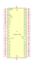
XC2018-PC68 | Description missing |
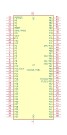
XC2018-PC84 | Description missing |
XC2064-PC68 | Description missing |
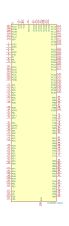
XC2C256-TQ144 | Description: CoolRunner-II CPLD, 256 macrocells
Keys: CPLD
Datasheet: https://www.xilinx.com/support/documentation/data_sheets/ds094.pdf |
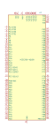
XC2C256-VQ100 | Description: CoolRunner-II CPLD, 256 macrocells, VQFP-100
Keys: CPLD
Datasheet: https://www.xilinx.com/support/documentation/data_sheets/ds094.pdf |
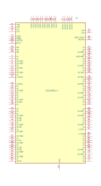
XC2S100TQ144 | Description: spartan 2
Keys: FPGA
Datasheet: xilinx/spartan2e/spartan2e.pdf |
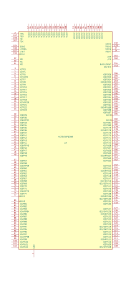
XC2S150PQ208 | Description: None
Keys: FPGA
Datasheet: xilinx/spartan2e/spartan2e.pdf |
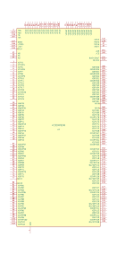
XC2S200PQ208 | Description: None
Keys: FPGA
Datasheet: xilinx/spartan2e/spartan2e.pdf |
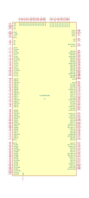
XC2S300PQ208 | Description: None
Keys: None
Datasheet: xilinx/spartan2e/spartan2e.pdf |
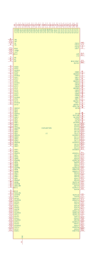
XC2S400FT256 | Description missing |
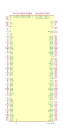
XC2S50-PQ208 | Description missing |
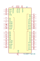
XC2S64A-xQFG48 | Description: Xilinx CoolRunner
Keys: None
Datasheet: xilinx/xc2c64.pdf |
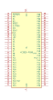
XC3020-PC68 | Description missing |
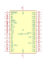
XC3030-PC44 | Description missing |
XC3030-PC68 | Description missing |
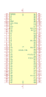
XC3030-PC84 | Description missing |
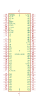
XC3030-VQ100 | Description missing |
XC3042-PC84 | Description missing |
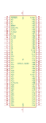
XC3042-VQ100 | Description missing |
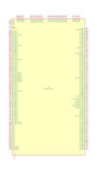
XC3S1400A-FG484 | Description missing |
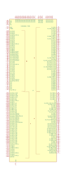
XC3S200AN-FT256 | Description: BGA256/1mm
Keys: None
Datasheet: None |
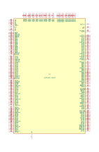
XC3S400-FG320 | Description missing |
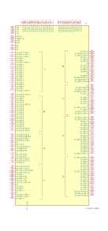
XC3S400-PQ208 | Description missing |
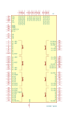
XC3S50-VQ100 | Description: spartan 2
Keys: FPGA
Datasheet: xilinx/spartan2e/spartan2e.pdf |
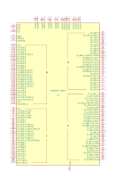
XC3S50AN-TQG144 | Description missing |
XC4003-PC84 | Description missing |
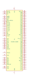
XC4003-VQ100 | Description: None
Keys: None
Datasheet: xilinx/xc400x-pinout.pdf |
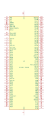
XC4004-PQ160 | Description missing |
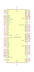
XC4005-PC84 | Description missing |
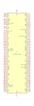
XC4005-PG156 | Description missing |
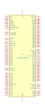
XC4005-PQ100 | Description missing |
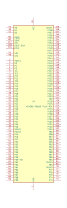
XC4005-PQ160 | Description missing |
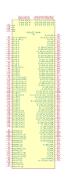
XC6SLX25T-BG484 | Description: SPARTAN-6 FG484
Keys: None
Datasheet: None |
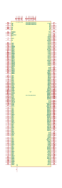
XCV150_BG352 | Description: Virtex FPGA
Keys: field programmable gate array
Datasheet: https://www.xilinx.com/support/documentation/data_sheets/ds003.pdf |